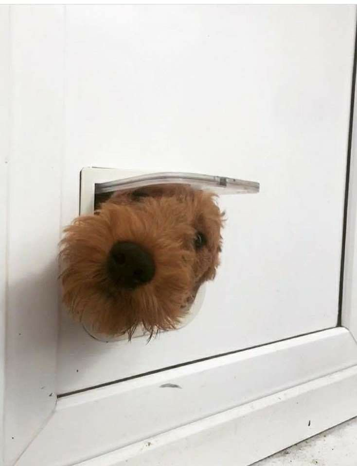
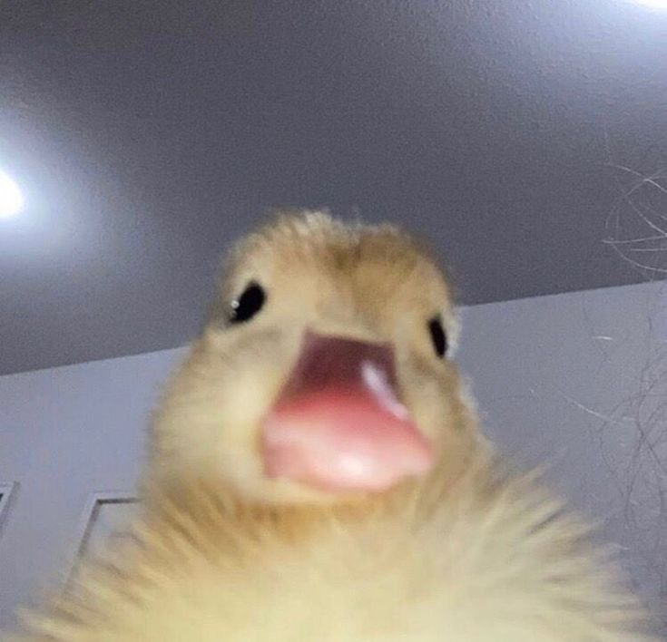
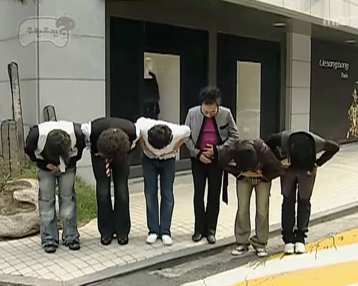
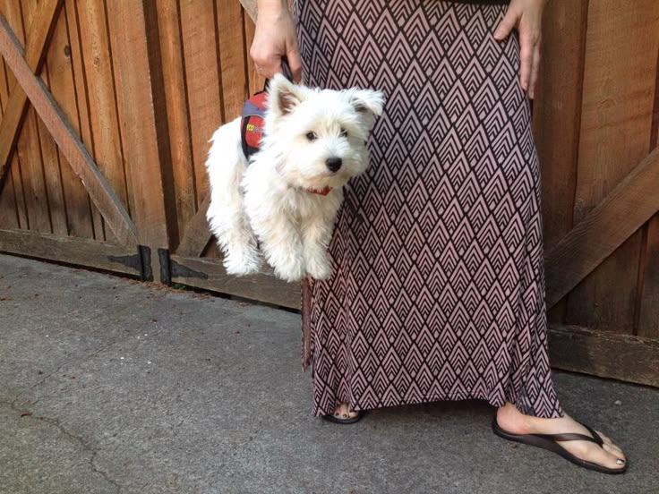
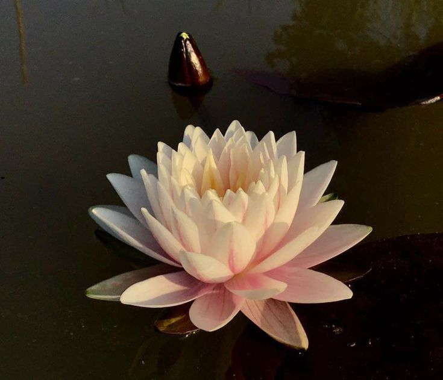
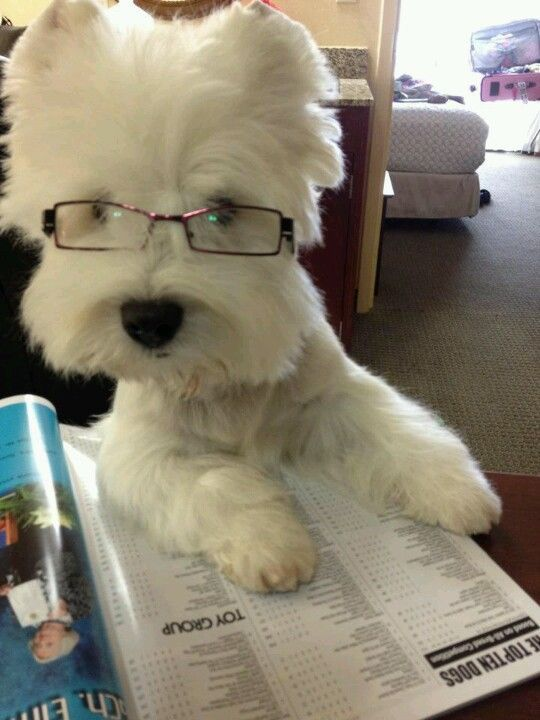
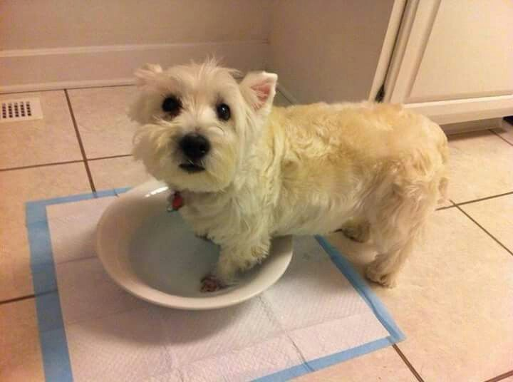
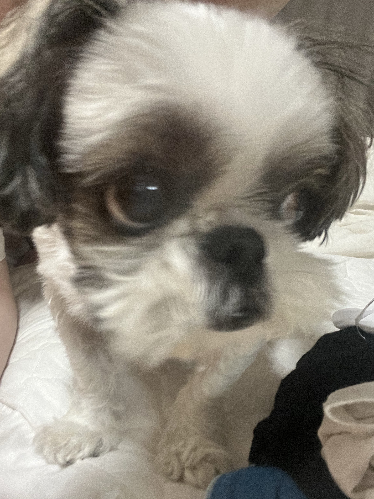

#democrazy

A-creixement

Al carrer

CANVI

Centro de diseño

Come y calla

Comedor y centro

Comestibles
El atlas infográfico
Escuela de cocina
Feel Wood
Estudio y proyecto
Game of Dots
Flowpot
Forwart
Gausacs